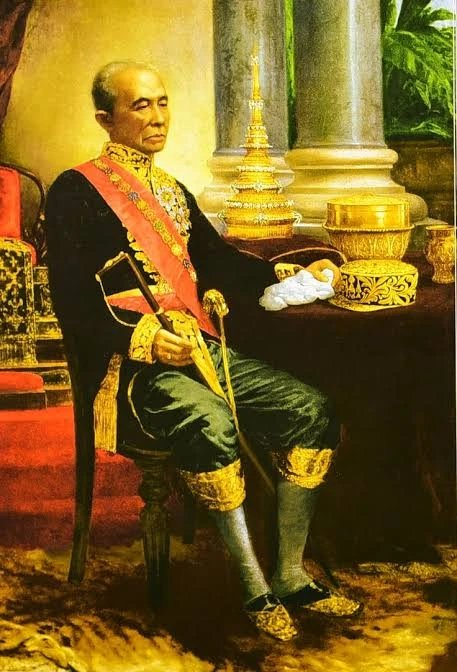

วัดปทุมวนาราม
ราชวรวิหาร
พระอารามหลวงกลางย่านสยาม ที่รัชกาลที่ 4 โปรดให้สร้างขึ้นคู่กับวังสระปทุม
ประวัติ
ประวัติวัดปทุมวนาราม
วัดปทุมวนาราม ถูกสร้างขึ้นพร้อมกับวังสระปทุม ซึ่งมาจากแนวคิดของพระบาทสมเด็จพระจอมเกล้าเจ้าอยู่หัว (รัชกาลที่ ๔) ที่ต้องการสร้างสถานที่ตากอากาศขึ้นในบริเวณนอกพระนคร โดยบริเวณของวัดปทุมวนารามในอดีตนั้นเป็นที่ลุ่มต่ำมีน้ำขังตลอดเวลาและมีบัวขึ้นอยู่ทั่วไป
ระหว่างการก่อสร้างวัดและวัง ได้มีการขุดลอกสระ ๒ สระเชื่อมต่อกัน สระทางด้านเหนือเรียกว่าสระใน เป็นเขตพระราชฐาน ส่วนทางด้านใต้เรียกว่าสระนอก ทรงอนุญาตให้คนทั่วไปเข้ามาด้านในได้ และสระนอกทางด้านใต้ไว้เป็นที่แล่นเรือของข้าราชการและประชาชนทั่วไป พระราชทานชื่อบริเวณนี้ว่า “ปทุมวัน”
ก่อนจะสร้างวัดขึ้นริมสระนอกเพื่อเฉลิมพระเกียรติสมเด็จพระเทพศิรินทราบรมราชินี พระราชทานชื่อว่า “วัดปทุมวนาราม” แต่ชาวบ้านนิยมเรียกว่า “วัดสระปทุม” หรือ “วัดสระ” เมื่อสร้างวัดเสร็จพระองค์ทรงนิมนต์พระสงฆ์คณะลาวจากวัดบวรนิเวศวิหารมาเป็นเจ้าอาวาสรูปแรกของวัด

สำรวจวัด
เริ่มจากเรื่องที่สนใจ


ความสงบกลางย่านสยาม
วัดปทุมวนาราม หรือชื่อเดิมว่าวัดสระปทุม เป็นพระอารามหลวงชั้นตรี ชนิดราชวรวิหาร สังกัดธรรมยุติกนิกาย
วัดตั้งอยู่ระหว่างย่านสยามกับย่านราชประสงค์ ท่ามกลางอาคารสูง แต่ยังคงมีสระน้ำและสวนป่าร่มรื่นให้เข้ามาสักการะและปฏิบัติธรรม